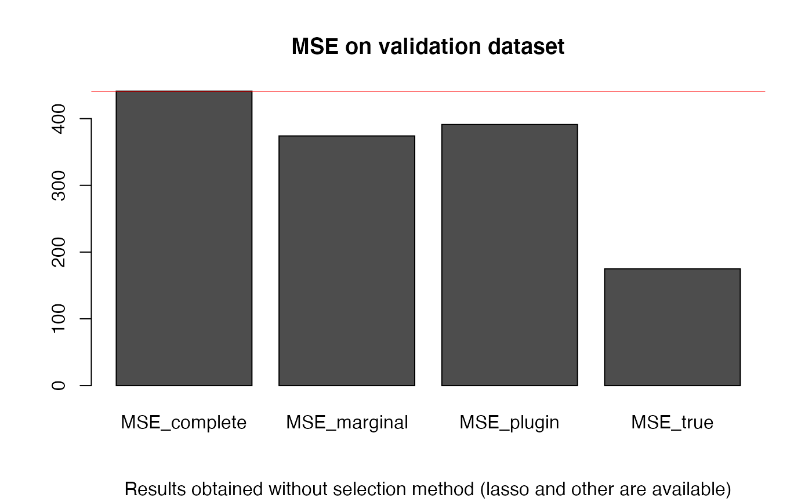

Sequential linear regression based on a structural equation model (explicit correlations). It permits to face highly correlated datasets. We first search for an explicit model of correlations within the covariates by linear regression, then this structure is interpreted and used to reduce dimension and correlations for the main regression on the response variable.
CorReg: see http://www.correg.org for article and Phd Thesis about CorReg.
Model-based covariable decorrelation in linear regression (CorReg): application to missing data and to steel industry. C Thery - 2015. See http://www.theses.fr/2015LIL10060 to read the associated PhD Thesis.
Clement THERY <clement.thery@arcelormittal.com>
set.seed(1) # dataset generation base <- mixture_generator(n = 15, p = 10, ratio = 0.4, tp1 = 1, tp2 = 1, tp3 = 1, positive = 0.5, R2Y = 0.8, R2 = 0.9, scale = TRUE, max_compl = 3, lambda = 1) X_appr <- base$X_appr # learning sample Y_appr <- base$Y_appr # response variable for the learning sample Y_test <- base$Y_test # responsee variable for the validation sample X_test <- base$X_test # validation sample TrueZ <- base$Z # True generative structure (binary adjacency matrix) # Z_i,j=1 means that Xj linearly depends on Xi # density estimation for the MCMC (with Gaussian Mixtures) density <- density_estimation(X = X_appr, nbclustmax = 8, detailed = TRUE) Bic_null_vect <- density$BIC_vect # vector of the BIC found (1 value per covariate) # MCMC to find the structure res = structureFinder(X = X_appr, verbose = 0, reject = 0, Maxiter = 900, nbini = 20, candidates = -1, Bic_null_vect = Bic_null_vect, star = TRUE, p1max = 15, clean = TRUE) hatZ = res$Z_opt # found structure (adjacency matrix) hatBic = res$bic_opt # associated BIC # BIC comparison between true and found structure bicopt_vect = BicZ(X = X_appr, Z = hatZ, Bic_null_vect = Bic_null_vect) bicopt_true = BicZ(X = X_appr, Z = TrueZ, Bic_null_vect = Bic_null_vect) sum(bicopt_vect)#> [1] 259.9427sum(bicopt_true)#> [1] 268.9612# Structure comparison compZ = compare_struct(trueZ = TrueZ, Zalgo = hatZ) # qualitative comparison # interpretation of found and true structure ordered by increasing R2 # <NA>line: name of subregressed covariate readZ(Z = hatZ, crit = "R2", X = X_appr, output = "all", order = 1)#> [[1]] #> coefs var #> 1 0.756688931044162 R2 #> 2 <NA> 4 #> 3 0.859624940069372 intercept #> 4 -0.1399117868683 2 #> 5 0.0753356912115381 5 #> 6 -0.420585132044892 6 #> 7 0.386889952414899 8 #> 8 0.158399928444675 10 #> #> [[2]] #> coefs var #> 1 0.911860461449336 R2 #> 2 <NA> 1 #> 3 0.91932024337823 intercept #> 4 0.117452195745483 2 #> 5 -0.253074594237159 5 #> 6 0.140264670180811 8 #> 7 -0.41875113197976 10 #> #> [[3]] #> coefs var #> 1 0.923279184954364 R2 #> 2 <NA> 9 #> 3 0.72615680052669 intercept #> 4 -0.478981431253879 3 #> 5 -0.13537277411296 5 #> 6 0.466653365456346 8 #> 7 -0.345854851769902 10 #> #> [[4]] #> coefs var #> 1 0.959993325124032 R2 #> 2 <NA> 7 #> 3 -0.903716709197091 intercept #> 4 0.252418293426256 2 #> 5 -0.157191523221045 3 #> 6 -0.199826875526643 5 #> 7 -0.0670800344425359 6 #>#> [[1]] #> coefs var #> 1 0.714662171588836 R2 #> 2 <NA> 4 #> 3 0.84058604515217 intercept #> 4 -0.360058365453026 6 #> 5 0.305086409282352 8 #> 6 0.21237655098617 10 #> #> [[2]] #> coefs var #> 1 0.876810338540551 R2 #> 2 <NA> 1 #> 3 0.883968620534446 intercept #> 4 0.188189202428782 2 #> 5 -0.234780886884954 5 #> 6 -0.372082898411495 10 #> #> [[3]] #> coefs var #> 1 0.890792585053809 R2 #> 2 <NA> 9 #> 3 0.700168743089247 intercept #> 4 -0.534495903177699 3 #> 5 0.384756709283009 8 #> 6 -0.361609689733513 10 #> #> [[4]] #> coefs var #> 1 0.947197030815705 R2 #> 2 <NA> 7 #> 3 -0.897165694819893 intercept #> 4 0.253322024128277 2 #> 5 -0.180820187525035 3 #> 6 -0.210790435701806 5 #># Regression coefficients estimation select = "NULL" # without variable selection (otherwise, choose "lar" for example) resY = correg(X = X_appr, Y = Y_appr, Z = hatZ, compl = TRUE, expl = TRUE, pred = TRUE, select = select, K = 10) # MSE computation MSE_complete = MSE_loc(Y = Y_test, X = X_test, A = resY$compl$A) # classical model on X MSE_marginal = MSE_loc(Y = Y_test, X = X_test, A = resY$expl$A) # reduced model without correlations MSE_plugin = MSE_loc(Y = Y_test, X = X_test, A = resY$pred$A) # plug-in model MSE_true = MSE_loc(Y = Y_test, X = X_test, A = base$A) # True model # MSE comparison MSE = data.frame(MSE_complete, MSE_marginal, MSE_plugin, MSE_true) MSE # estimated structure#> MSE_complete MSE_marginal MSE_plugin MSE_true #> 1 441.0069 374.0534 391.176 174.9802compZ$true_left#> [1] 4compZ$false_left#> [1] 0barplot(as.matrix(MSE), main = "MSE on validation dataset", sub = "Results obtained without selection method (lasso and other are available)")